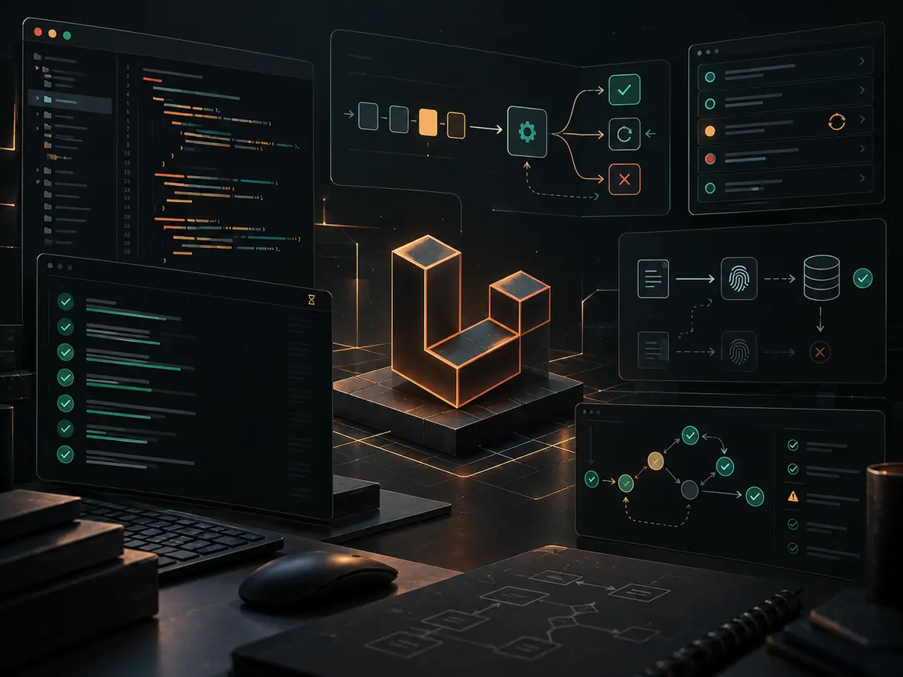

Laravel FlowGuard
Reliability tooling for idempotent operations, webhooks and safe recovery.
I build reliable Laravel backends and AI-powered workflows for SaaS platforms, Shopify systems, media generation, voice/audio integrations and payments. From system design to production reliability.
A curated look at SaaS products, Shopify systems, commerce platforms, AI tools and open-source packages I engineered or led technically.
Three examples of the constraints, architecture and operational thinking behind my work. Details reflect projects in my CV.
At Jomlakwt, I worked across 260+ commerce APIs and investigated production bottlenecks in MySQL, Nginx, PHP-FPM and queues.
Explore projectVeriCatalog combines deterministic checks, incremental scans and guarded fixes with preflight checks, verification and audit trails.
Explore projectTik Video spans multi-provider AI generation, queue orchestration, callbacks and credit settlement with explicit failure handling.
Explore projectFigures describe specific platforms and engineering scope, not projected gains or guarantees.
From architecture decisions to the messy production details, I work where backend reliability meets business-critical workflows.
Modular backends, multi-tenancy, permissions, subscriptions and API contracts that can grow with your product.
Shopify Admin GraphQL, webhooks, checkout integrations, wallet flows and safe transaction state handling.
Query bottlenecks, queues, idempotency, race conditions and failure recovery in systems that cannot afford surprises.
Admin panels, internal tools, approval workflows and business integrations designed for the people running them.
What can AI automate safely? Where does Voice AI add value? Why do Laravel integrations fail? Start with decisions that matter to your business.إزاي تعمل أتمتة آمنة؟ إمتى Voice AI يفيد البيزنس؟ وليه التكاملات بتفشل؟ ابدأ بالحلول اللي بتفرق مع شركتك.

Provider abstraction, tool approvals and safe deployment for AI features in Laravel.من تكامل النماذج لموافقات الأدوات وضوابط التشغيل داخل Laravel.
Read the guide ↗اقرأ المقال ↗
Latency, Arabic dialects, scheduling boundaries and human handoff.زمن الاستجابة واللهجات وحدود الحجز والتحويل لموظف بشري.
Read the guide ↗اقرأ المقال ↗
Permission checks, prompt-injection risk and auditable tool approvals.التحقق من الصلاحيات وحقن التعليمات ومراجعة تنفيذ الأدوات.
Read the guide ↗اقرأ المقال ↗
The workflows that turn replies into qualified, trackable outcomes.ازاي تحول الردود إلى طلبات قابلة للمتابعة والقياس.
Read the guide ↗اقرأ المقال ↗
Model costs, human review, failures, maintenance and unit economics.تكلفة النماذج والمراجعة والأخطاء والصيانة والعائد الحقيقي.
Read the guide ↗اقرأ المقال ↗
Idempotency, reconciliation and payment-side evidence.Idempotency ومطابقة العمليات والتحقق من نتيجة الدفع.
Read the guide ↗اقرأ المقال ↗Beyond prompts: I engineer the APIs, queues, safeguards and integrations that make AI useful in real products.مش مجرد Prompts: ببني الـAPIs والـQueues وضوابط الأمان والتكاملات اللي تخلي الـAI مفيد جوه منتج حقيقي.
OpenAI integrations, AI-assisted content, moderation and model orchestration behind secure Laravel APIs—with quotas, retries and measurable usage.تكاملات OpenAI والمحتوى الذكي والمراجعة وتنظيم التعامل مع النماذج داخل Laravel APIs، مع حدود استخدام وإعادة محاولات وتتبع التكلفة.
Turn repeatable work into reliable flows: triggers, webhooks, CRM routing, document processing, background jobs and human approval where it matters.تحويل المهام المتكررة إلى مسارات موثوقة: Webhooks، وتنظيم الـCRM، ومعالجة المستندات، والمهام الخلفية، ومراجعة بشرية عند الحاجة.
Experience integrating ElevenLabs and AI audio-generation services into asynchronous media workflows. Voice assistants, transcription and telephony are possible integration scopes—not claimed as a shipped call-center product.خبرة في تكامل ElevenLabs وخدمات توليد الصوت داخل مسارات إنتاج غير متزامنة. المساعدات الصوتية والتفريغ الصوتي والاتصال الهاتفي مجالات تكامل ممكنة، وليست ادعاءً بمنتج اتصالات منشور.
At Tik Video, I worked on pipelines across 8+ AI/media providers: image and video generation, provider callbacks, credit reservation and recoverable failures.في Tik Video اشتغلت على مسارات توليد الصور والفيديو عبر أكثر من 8 مزودين، مع Callbacks وحجز الرصيد وإدارة حالات الفشل والاستعادة.
Clinics & appointments · E-commerce · Education · Customer support · Internal operations · Content productionالعيادات والحجوزات · المتاجر · التعليم · خدمة العملاء · العمليات الداخلية · إنتاج المحتوى
The numbers above describe specific projects. The industry examples describe potential applications; not a claim of deployments in every sector.الأرقام تخص مشاريع محددة. القطاعات المذكورة أمثلة للاستخدام الممكن، وليست ادعاءً بتنفيذ حلول في كل مجال.
I care about how systems behave on their worst day, not just how they look on a successful demo.
From multi-vendor commerce and EdTech to AI-powered SaaS and payment orchestration, my focus is the engineering foundation: clean boundaries, resilience, maintainability and measurable outcomes.
Transactions, idempotency, queues, reconciliation and failure recovery designed as product features.
Modular APIs, clear contracts, testable boundaries and architecture that survives growing teams and requirements.
The stack is broad, but the goal stays the same: clean architecture, stable operations, maintainable code and fast product delivery.
Production PHP, API contracts and maintainable systems.
High-volume workloads, transactions and recovery.
Build, test, deploy and operate with confidence.
Engineering ownership across real platforms, production constraints and multidisciplinary teams.
Backend ownership across enterprise learning, SaaS and operational systems: architecture, integrations, migrations, production support and technical reviews.
Designed Laravel domains and recoverable integrations for Saudi-facing AI/media and event products, including payments and asynchronous workloads.
Led high-volume commerce APIs, reliability and performance across seller operations, checkout, delivery, wallets and refunds.
I can help with system architecture, backend delivery, Shopify and payment workflows, technical audits, integrations and hard production problems.
Discuss your projectA practical way to move from requirements to an implementation you can own, support and extend.
Business flows, existing architecture, security boundaries and what success looks like.
Contracts, state transitions, idempotency, observability and how to recover safely.
Clean code, automated tests, focused reviews and production-ready deployment paths.
Clear documentation, monitoring, trade-offs and a straightforward maintenance plan.
What collaborators can expect from me — without fabricated client quotes or endorsements.
Clear communication, ownership and honest technical trade-offs — from first architecture call to launch.
WORKING PRINCIPLE / COLLABORATIONA bias for testing critical flows, not just celebrating the happy path.
WORKING PRINCIPLE / QUALITYSystems that are understandable, supportable and built for the next engineer.
WORKING PRINCIPLE / HANDOFFVerified client references can be discussed privately on request. No public testimonials are attributed without permission.
Have a product to launch, a platform to scale or an integration to untangle? Let's talk about the problem and find a clean way forward.